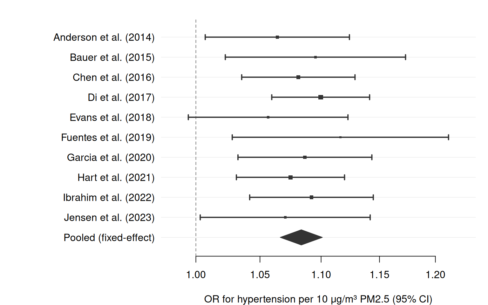
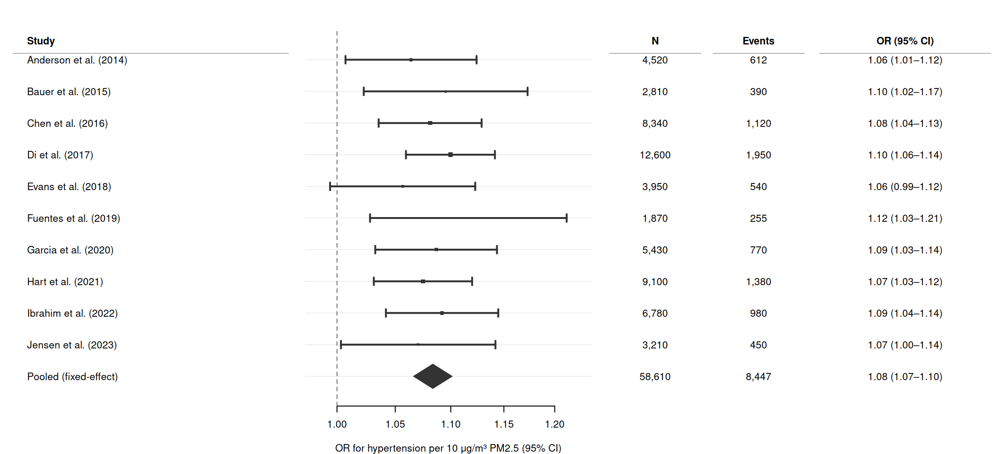
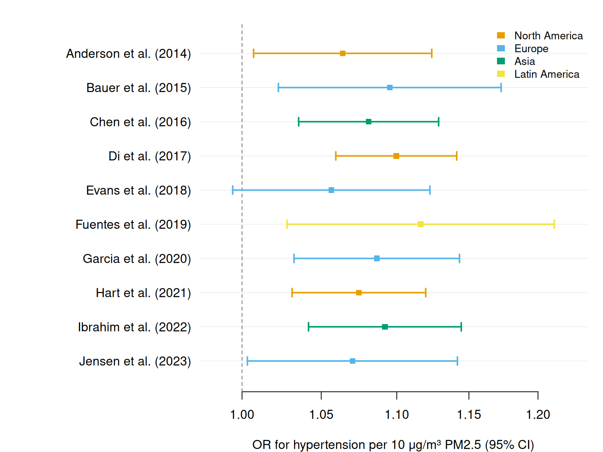
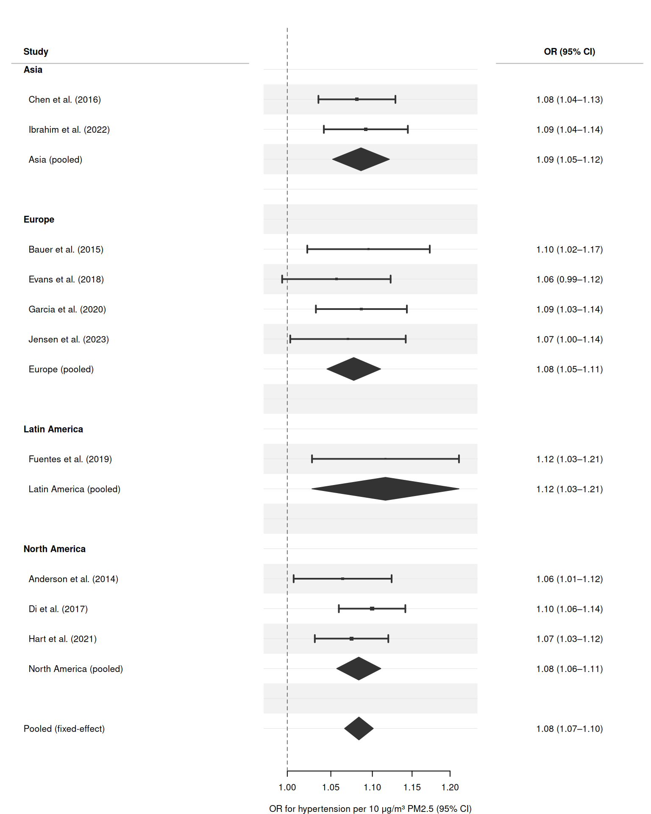
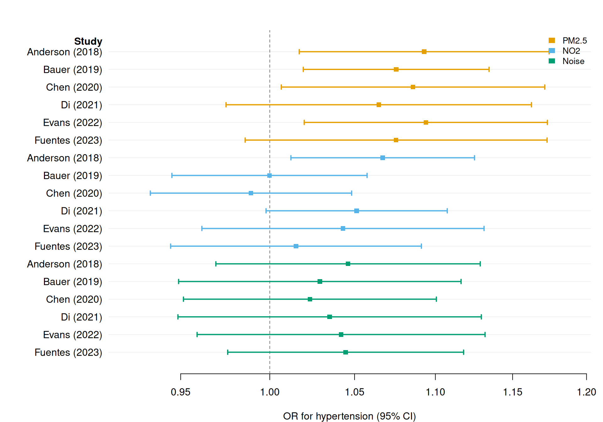

set.seed(2024)
n_studies <- 10
meta_dat <- data.frame(
study = c(
"Anderson et al. (2014)",
"Bauer et al. (2015)",
"Chen et al. (2016)",
"Di et al. (2017)",
"Evans et al. (2018)",
"Fuentes et al. (2019)",
"Garcia et al. (2020)",
"Hart et al. (2021)",
"Ibrahim et al. (2022)",
"Jensen et al. (2023)"
),
region = c(
"North America", "Europe", "Asia", "North America", "Europe",
"Latin America", "Europe", "North America", "Asia", "Europe"
),
n = c(4520, 2810, 8340, 12600, 3950, 1870, 5430, 9100, 6780, 3210),
events = c( 612, 390, 1120, 1950, 540, 255, 770, 1380, 980, 450),
# Log odds ratios and SEs (simulated around a true log-OR of 0.08 per
# 10 µg/m³ increase in PM2.5)
log_or = c(0.062, 0.091, 0.078, 0.095, 0.055, 0.110, 0.083,
0.072, 0.088, 0.068),
se = c(0.028, 0.035, 0.022, 0.019, 0.031, 0.042, 0.026,
0.021, 0.024, 0.033),
is_sum = FALSE
)
# Back-transform to OR scale
meta_dat$or <- exp(meta_dat$log_or)
meta_dat$lower <- exp(meta_dat$log_or - 1.96 * meta_dat$se)
meta_dat$upper <- exp(meta_dat$log_or + 1.96 * meta_dat$se)
# Inverse-variance weights for the fixed-effect pooled estimate
meta_dat$weight <- 1 / meta_dat$se^2
# Fixed-effect pooled log-OR and SE
pooled_log_or <- with(meta_dat,
sum(weight * log_or) / sum(weight)
)
pooled_se <- sqrt(1 / sum(meta_dat$weight))
# Append pooled row
pooled_row <- data.frame(
study = "Pooled (fixed-effect)",
region = NA_character_,
n = sum(meta_dat$n),
events = sum(meta_dat$events),
log_or = pooled_log_or,
se = pooled_se,
or = exp(pooled_log_or),
lower = exp(pooled_log_or - 1.96 * pooled_se),
upper = exp(pooled_log_or + 1.96 * pooled_se),
weight = NA_real_,
is_sum = TRUE
)
meta_all <- rbind(meta_dat, pooled_row)
# Formatted text for the right-hand table columns
meta_all$or_text <- ifelse(
meta_all$is_sum,
sprintf("%.2f (%.2f\u2013%.2f)", meta_all$or, meta_all$lower, meta_all$upper),
sprintf("%.2f (%.2f\u2013%.2f)", meta_all$or, meta_all$lower, meta_all$upper)
)
meta_all$n_text <- formatC(meta_all$n, format = "d", big.mark = ",")
meta_all$events_text <- formatC(meta_all$events, format = "d", big.mark = ",")Forest plots for meta-analyses
The classic use case for a forest plot is a systematic review or meta-analysis: each row represents one study, point sizes reflect precision (inverse-variance weights), and a pooled estimate — drawn as a filled diamond — summarises the evidence.
forrest() handles this pattern natively. This vignette walks through a simulated meta-analysis of the association between long-term fine-particulate matter (PM2.5) exposure and incident hypertension.
Simulated data
Basic meta-analysis forest plot
The simplest meta-analysis forest plot: studies ordered by appearance, point sizes proportional to inverse-variance weight, and a summary diamond.
forrest(
meta_all,
estimate = "or",
lower = "lower",
upper = "upper",
label = "study",
is_summary = "is_sum",
weight = "weight",
log_scale = TRUE,
ref_line = 1,
xlab = "OR for hypertension per 10 \u03bcg/m\u00b3 PM2.5 (95% CI)"
)
Adding text columns
Right-hand text panels are common in published forest plots. Pass cols as a named character vector, and set header to label the study column.
forrest(
meta_all,
estimate = "or",
lower = "lower",
upper = "upper",
label = "study",
is_summary = "is_sum",
weight = "weight",
log_scale = TRUE,
ref_line = 1,
header = "Study",
cols = c(
"N" = "n_text",
"Events" = "events_text",
"OR (95% CI)" = "or_text"
),
widths = c(3.5, 3.5, 1.2, 1.2, 2.2),
xlab = "OR for hypertension per 10 \u03bcg/m\u00b3 PM2.5 (95% CI)"
)
Subgroup analyses by region
Colour by region to compare estimates across geographic subgroups. A group column triggers the Okabe-Ito palette and an automatic legend.
# Exclude pooled row for the subgroup plot; add region-level pooled rows
study_dat <- meta_all[!meta_all$is_sum, ]
forrest(
study_dat,
estimate = "or",
lower = "lower",
upper = "upper",
label = "study",
group = "region",
log_scale = TRUE,
ref_line = 1,
legend_pos = "topright",
xlab = "OR for hypertension per 10 \u03bcg/m\u00b3 PM2.5 (95% CI)"
)
Structured subgroup analysis with section headers
Use NA estimates to insert bold section headers and blank spacers, grouping studies by region with a region-level pooled diamond.
# Helper: compute fixed-effect pooled row for a subset
pool_region <- function(dat, region_label) {
w <- 1 / dat$se^2
lp <- sum(w * dat$log_or) / sum(w)
se <- sqrt(1 / sum(w))
data.frame(
study = sprintf(" %s (pooled)", region_label),
region = region_label,
n = sum(dat$n),
events = sum(dat$events),
log_or = lp,
se = se,
or = exp(lp),
lower = exp(lp - 1.96 * se),
upper = exp(lp + 1.96 * se),
weight = sum(w),
is_sum = TRUE
)
}
regions <- c("Asia", "Europe", "Latin America", "North America")
region_data <- lapply(regions, function(r) {
sub <- meta_dat[meta_dat$region == r, ]
# Indent study names within section
sub$study <- paste0(" ", sub$study)
rbind(
data.frame(study = r, region = r, n = NA, events = NA,
log_or = NA, se = NA, or = NA, lower = NA,
upper = NA, weight = NA, is_sum = FALSE),
sub,
pool_region(sub, r),
data.frame(study = "", region = NA, n = NA, events = NA,
log_or = NA, se = NA, or = NA, lower = NA,
upper = NA, weight = NA, is_sum = FALSE)
)
})
structured <- do.call(rbind, region_data)
structured <- rbind(
structured,
pooled_row[, names(structured)]
)
structured$or_text <- ifelse(
is.na(structured$or), "",
sprintf("%.2f (%.2f\u2013%.2f)",
structured$or, structured$lower, structured$upper)
)
forrest(
structured,
estimate = "or",
lower = "lower",
upper = "upper",
label = "study",
is_summary = "is_sum",
weight = "weight",
log_scale = TRUE,
ref_line = 1,
header = "Study",
cols = c("OR (95% CI)" = "or_text"),
widths = c(4, 3.5, 2.5),
stripe = TRUE,
xlab = "OR for hypertension per 10 \u03bcg/m\u00b3 PM2.5 (95% CI)"
)
Multiple exposures: comparing PM2.5, NO2, and noise
A meta-analysis may cover several exposures simultaneously. Use group to colour by exposure and dodge = TRUE to vertically separate the CIs when multiple rows share the same study label.
# Simulate effect estimates for three air-quality exposures across 6 studies
set.seed(99)
studies6 <- c("Anderson (2018)", "Bauer (2019)", "Chen (2020)",
"Di (2021)", "Evans (2022)", "Fuentes (2023)")
make_exp <- function(true_lor, n = 6) {
se <- runif(n, 0.025, 0.045)
lor <- rnorm(n, true_lor, 0.02)
data.frame(
or = exp(lor),
lower = exp(lor - 1.96 * se),
upper = exp(lor + 1.96 * se)
)
}
pm25 <- make_exp(0.08)
no2 <- make_exp(0.05)
noise <- make_exp(0.03)
multi_exp <- data.frame(
study = rep(studies6, 3),
exposure = rep(c("PM2.5", "NO2", "Noise"), each = 6),
or = c(pm25$or, no2$or, noise$or),
lower = c(pm25$lower, no2$lower, noise$lower),
upper = c(pm25$upper, no2$upper, noise$upper)
)
# Formatted OR text per row
multi_exp$or_text <- sprintf("%.2f (%.2f\u2013%.2f)",
multi_exp$or,
multi_exp$lower,
multi_exp$upper)
forrest(
multi_exp,
estimate = "or",
lower = "lower",
upper = "upper",
label = "study",
group = "exposure",
dodge = TRUE,
log_scale = TRUE,
ref_line = 1,
legend_pos = "topright",
header = "Study",
xlab = "OR for hypertension (95% CI)"
)
Saving plots
save_forrest(
file = "meta_analysis_forest.pdf",
plot = function() {
forrest(
meta_all,
estimate = "or",
lower = "lower",
upper = "upper",
label = "study",
is_summary = "is_sum",
weight = "weight",
log_scale = TRUE,
ref_line = 1,
xlab = "OR for hypertension per 10 \u03bcg/m\u00b3 PM2.5 (95% CI)"
)
},
width = 10,
height = 6
)